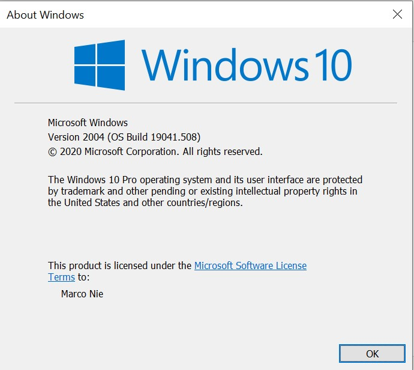

这篇文章上次修改于 305 天前，可能其部分内容已经发生变化，如有疑问可询问作者。
Windows 10 上的 wsl 可以方便的运行 Linux 环境，最近从 wsl 升级到了 wsl 2，看了下介绍主要区别是：
- increase file system performance
- support full system call compatibility
增加了系统性能，更加完善的 Linux 系统环境。
之前再 wsl 上无法使用的一些功能如 systemd 和网络 socket 提取的功能不知道是否可用了，下面就升级到 wsl 2 进行测试。
关于 wsl 的介绍和安装可以参考我的教程：https://blog.niekun.net/archives/1148.html
环境要求
Requirements：
- For x64 systems: Version 1903 or higher, with Build 18362 or higher.
- For ARM64 systems: Version 2004 or higher, with Build 19041 or higher.
- Builds lower than 18362 do not support WSL 2. Use the Windows Update Assistant to update your version of Windows.
可以使用命令查看当前系统版本，快捷键 win + R，输入 winver 弹出系统信息：

命令行打开系统功能
再我之前写的 wsl 安装教程里，介绍了从系统控制面板和命令行打开 Windows Subsystem for Linux 功能的方法，这里只介绍命令行方式。
首先以管理员权限打开 powershell。
如果之前没有安装 wsl 的话首先开启 Windows Subsystem for Linux：
dism.exe /online /enable-feature /featurename:Microsoft-Windows-Subsystem-Linux /all /norestart
然后开启 Virtual Machine feature：
dism.exe /online /enable-feature /featurename:VirtualMachinePlatform /all /norestart
完成以上两部后，重启系统。
重启完成后安装 Linux 内核更新包：点击下载
设置 wsl 默认版本为 2：(管理员权限打开 powershell)
wsl --set-default-version 2
设置默认版本后，以后安装的 Linux 子系统默认为 wsl 2 版本。
也可以将之前安装的 Linux 子系统升级到 wsl 2：
# 查看当前已安装的子系统
wsl -l -v
# 升级某个子系统到 wsl 2
wsl --set-version Ubuntu 2wsl 2 安装完成后就可以去 Windows 商店下载安装 Linux 发行版了：https://aka.ms/wslstore
安装 Linux 发行版后的具体设置和之前 wsl 安装教程一样：https://blog.niekun.net/archives/1148.html
参考链接
https://docs.microsoft.com/en-us/windows/wsl/install-win10
https://docs.microsoft.com/en-us/windows/wsl/compare-versions
没有评论